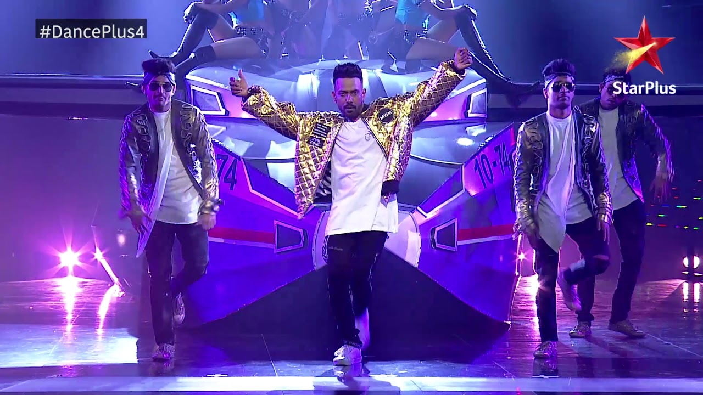
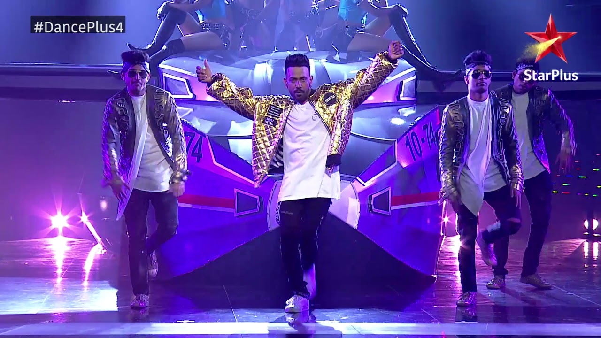

My Favourite Hobby

I love to Dance because It is just moving your body and enjoying the song and there are many types of dance like Hip hop,Ballet,Bangda,Jass,Salsa and many more but the best is free style because there are no rules and steps to follow in order so When you can do it yourself and it is so fun and Dance is not only done for fun but for exercise also like zumba is a dance form of exercising and It will be fun as well And thats why I love to Dance.
 
